Jupyter
Automatic Neuron Reconstruction
Imaged neurons are typically stored in tiff stacks. If the entirety of the imaged subject is contained within the bounds of a single image stack, then no special measures need to be taken. However, if there are multiple overlapping tiff stacks used to image the subject, they will first need to be stitched together into a single stack. For the sake of simplifying the work needed, at this moment, we will only work on single tiff stack datasets.
import numpy as np
import pandas as pd
import ipywidgets as ipyw
import matplotlib.pyplot as plt
import matplotlib.patches as mpatches
%matplotlib inline
from skimage import color, io
from skimage.filters import gaussian, meijering, sato, sobel, frangi, hessian, threshold_minimum, threshold_otsu, try_all_threshold
from skimage.measure import label, regionprops, regionprops_table
from skimage.morphology import disk, dilation, erosion, opening, square
from skimage.segmentation import flood, flood_fill
from skimage.util import invert
plt.rcParams['font.size'] = 18
image = io.imread("/home/jc/Downloads/swc/flyMotorNeurons/22-24-1-7.tif")
neuron_unproc = image[22]
#image = invert(color.rgb2gray(io.imread("/home/jc/Downloads/swc/granuleCell63X/granule63X-.flatCombined.tif")))
#neuron_unproc = image
fig, ax = plt.subplots(figsize=(15,15))
ax.set_title("Unprocessed Neuron")
ax.set_axis_off()
# Display an example image slice
ax.imshow(neuron_unproc)
print(image.shape)
(42, 1024, 1024)

Now we have a way to load the tiff stack into Python. Sometime in the future we should look into building a widget that allows us to scroll through the different image slices in the 3D-volume represented by the .tiff stack.
Soma Segmentation
Gray-scale Erosion
The next step is to start processing these images via gray-scale erosion to remove the thin, branching processes.
The central pixel value of each "neighborhood" in the image is replaced by the darkest pixel value in the entire neighborhood.
Effect: Magnifies dark regions, shrinks bright regions
The following techniques can be read up on further here.
Our goal at this point is to create a binary mask that separates the large neuronal cell-body from the rest of the image. In this pursuit, we will often define two types of structuring elements. One for eroding the image so that we can isolate the cell body in its entirety and another for dilating the image to connect regions that are semantically related, but were disjoint after an initial thresholding.
This process of dilation and erosion, closing and opening can be finicky and often requires some amount of intelligence/intervention so that the resulting masks are useful. Additional research will be required here to generalize a process that will work with a larger variety of neuronal image stacks.
eroded = neuron_unproc
for _ in range(5):
eroded = erosion(eroded, square(5))
#eroded = opening(eroded, square(5))
plt.figure(figsize=(15,15))
plt.imshow(eroded, cmap=plt.cm.gray)
<matplotlib.image.AxesImage at 0x7f7e6338e880>
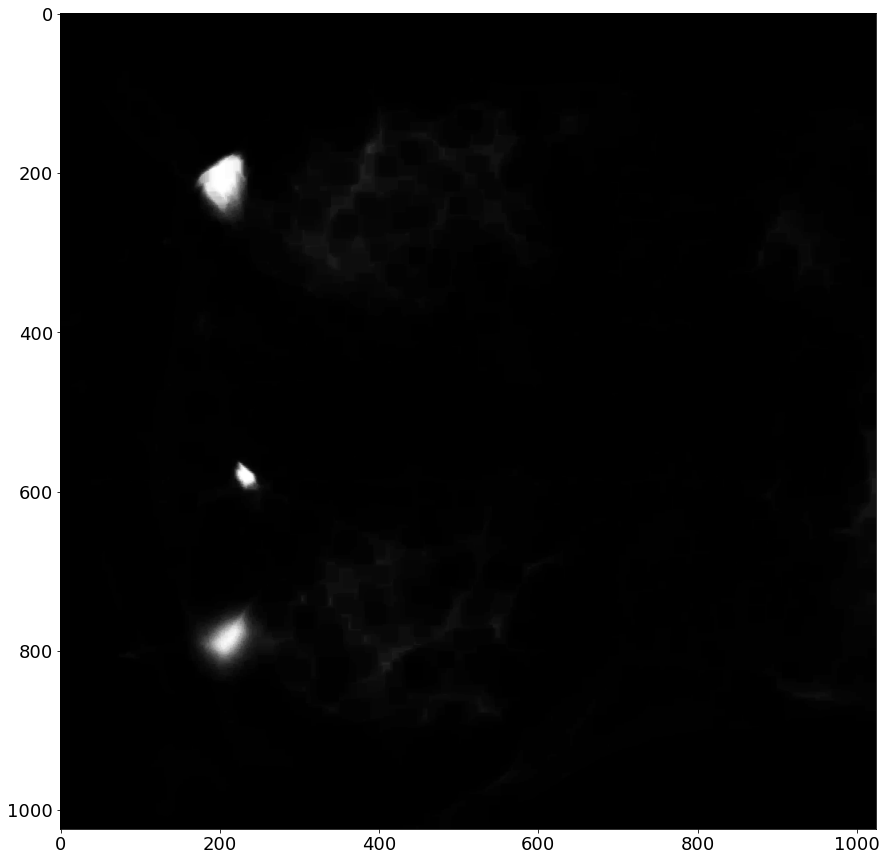
eroded = gaussian(eroded, sigma=6)
plt.figure(figsize=(15,15))
plt.imshow(eroded, cmap=plt.cm.gray)
<matplotlib.image.AxesImage at 0x7f7e6336c700>
Thresholding
Now that we've smoothed the image a little bit, and softened some of the contrast with blur, we can apply a thresholding filter to obtain a binary mask of the image. If our previous processing steps were sufficient, we should be able to isolate the larger cell bodies from the rest of the image (i.e foreground-background segmentation). To illustrate the power of the preprocessing steps, let's first apply the filter to the unadulterated image.
fig, ax = try_all_threshold(neuron_unproc, figsize=(20,20), verbose=False)
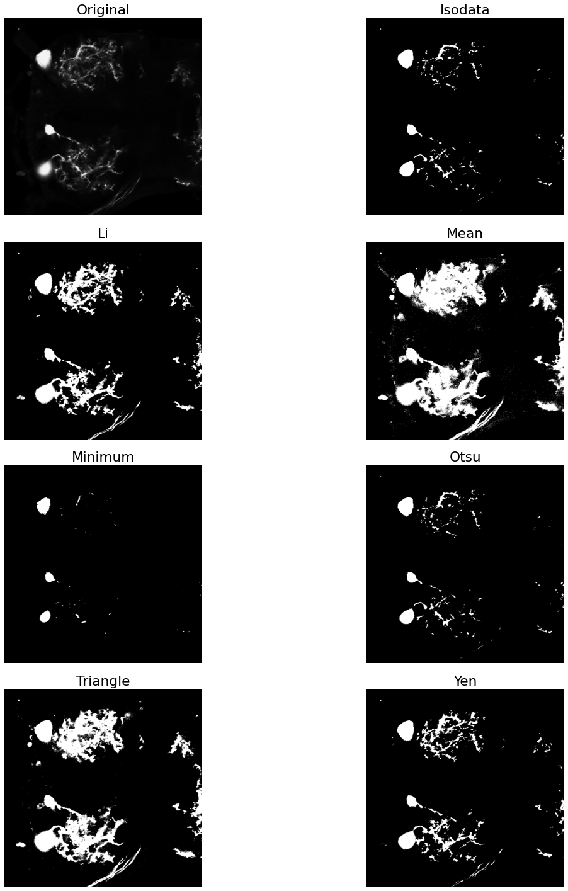
As we can see, this was not an effective thresholding. We do not get a clean segmentation from any of the thresholding approaches. The minimum thresholding filter comes close, but there is still some noise from the branching processes. Let's see just what a difference we get by applying the filters to the eroded image.
fig, ax = try_all_threshold(eroded, figsize=(20,20), verbose=False)
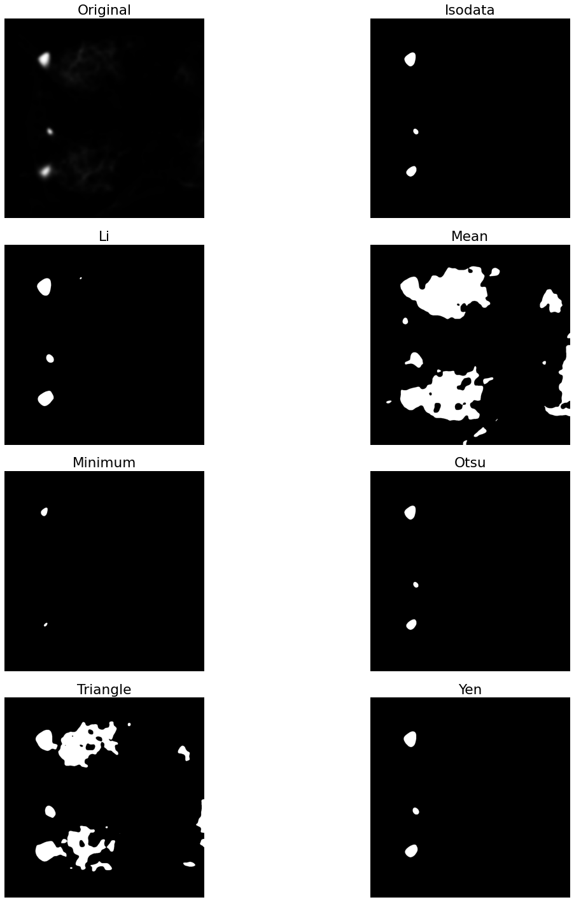
Now that we have a mask that isolates the neuronal soma from the rest of the image, we can apply labels to each pixel in this map. Pixels that are turned off will be considered background and pixels that are on will be foreground. However, we did lose a little bit of spacial information by our repeated erosions, so the area encapsulating the cell-body has been reduced. To rectify this, we can apply a dilation operation to reclaim some of that lost area.
Visual inspection shows us that the Otsu thresholding method is a good candidate to continue forward with, so we will use the mask resulting from its application for further exploration.
# compute an intensity value which minimizes variance between two pixel classes
soma_thresh = threshold_otsu(eroded)
#soma_thresh = threshold_minimum(eroded)
print(soma_thresh)
soma_mask = eroded > soma_thresh # create a binary mask where image[i] > soma_thresh
plt.figure(figsize=(10,10))
plt.imshow(soma_mask, cmap=plt.cm.binary)
0.18583690118945798
<matplotlib.image.AxesImage at 0x7f7e616770d0>
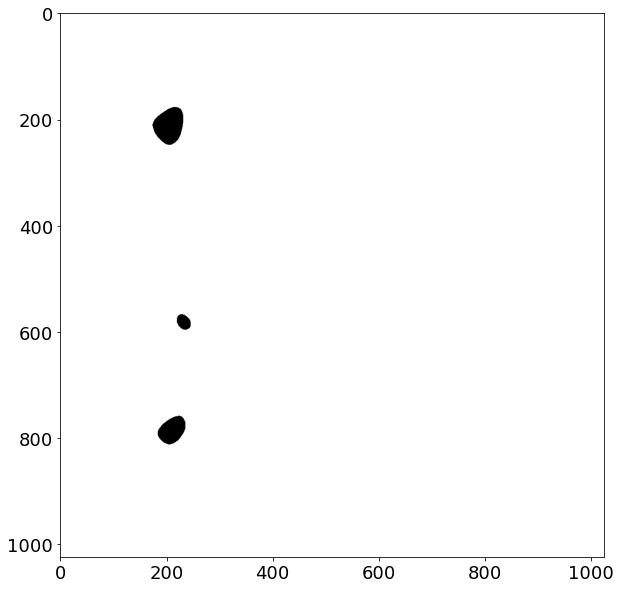
Now we can perform a small dilation to reclaim some of the eroded area for the segmented regions:
for _ in range(5):
soma_mask = dilation(soma_mask, disk(5))
#soma_mask = dilation(soma_mask, disk(3))
plt.figure(figsize=(10,10))
plt.imshow(soma_mask, cmap=plt.cm.binary)
<matplotlib.image.AxesImage at 0x7f7e615c96d0>
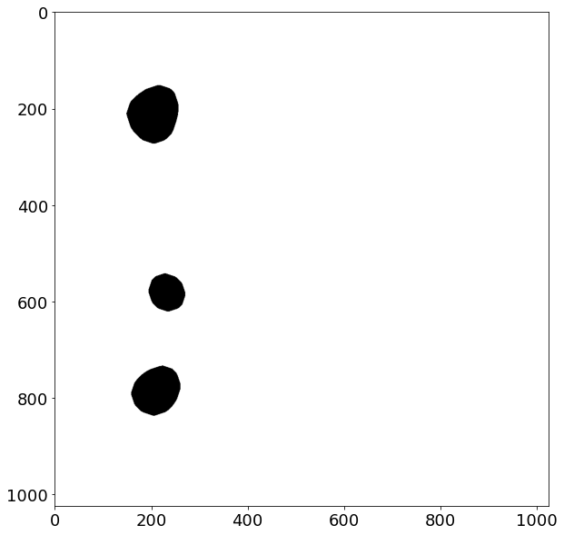
Now that we have a way to segment the detected cell bodies from the rest of the image background, we can define some structures which can later be used for constructing SWC files for representing the neurons in a tree structure. This is outside the scope of this project, but is the logical extension point for future iterations. For now we can define the types of pixels that we expect to see in the image. Additional granularity is expected to extend these base definitions, such as making the distinction between basal and apical dendrites as well as labelling critical "fork" points, which are the necks of bifurcations. Because we will be employing a modest minimum spanning tree to approximate the neuronal structure, these additional labels are reserved for future work when the pipeline is able to make those distinctions between landmark points once they are extracted.
Additionaly, the Node class can be extended by including local direction, by examining the gradient of the image at the coordinates associated with the node. This information will prove useful when working with probabilistic tracing algorithms, such as Radojevic's and Meijering's Sequential Monte Carlo Estimation. Again, this is beyond the scope of this project and left for future iterations.
from enum import Enum
# TODO: extend to make distinction between basal and apical dendrite
class CellType(Enum):
UNDEFINED = 0
SOMA = 1
AXON = 2
DENDRITE = 3
# base description of a neuron node, currently unused, but serves as extension point for later revisions when creating SWC files
class Node():
def __init__(self, x, y, z=None, typ=CellType.UNDEFINED, radius=0.1, parent=-1):
self.x = x
self.y = y
self.z = z
self.type = typ
self.radius = radius
self.parent = parent
# NOTE: Does not include initial sample number, addition of this identifier should prefix this method's output
def toSWCLine(self):
return f'{self.x} {self.y} {self.z} {self.type} {self.radius} {self.parent}'
label_image = label(soma_mask)
label_image_overlay = color.label2rgb(label_image, image=neuron_unproc, bg_label=0)
# extract the coordinates of the labeled regions representing the neuronal soma(s)
props = regionprops_table(label_image, properties=('centroid',
'orientation',
'major_axis_length',
'minor_axis_length'))
print(pd.DataFrame(props))
fig, ax = plt.subplots(figsize=(15, 15))
ax.imshow(label_image_overlay)
ax.set_title('Soma Segmentation Overlay')
somas = []
# adapted from https://scikit-image.org/docs/stable/auto_examples/segmentation/plot_label.html?highlight=otsu
for region in regionprops(label_image):
# take regions with large enough areas
if region.area >= 100:
# draw rectangle around segmented cell bodies
minr, minc, maxr, maxc = region.bbox
rect = mpatches.Rectangle((minc, minr), maxc - minc, maxr - minr,
fill=False, edgecolor='red', linewidth=2)
ax.add_patch(rect)
ax.plot(region.centroid[1], region.centroid[0], 'wo')
# construct nodes describing the segmented somas, use the larger of the two axes as an approximate spherical radius
somas.append(Node(x=region.centroid[1],
y=region.centroid[0],
typ=CellType.SOMA,
radius=max(region.major_axis_length, region.minor_axis_length)/2))
ax.set_axis_off()
plt.tight_layout()
plt.show()
# print example SWC lines denoting each detected soma
print(f'Example SWC lines describing each detected Soma')
for idx, soma in enumerate(somas):
print(f'{idx} {soma.toSWCLine()}')
centroid-0 centroid-1 orientation major_axis_length minor_axis_length
0 211.243354 205.268916 -0.333459 120.430478 103.977606
1 581.140447 232.435802 0.621014 80.107262 72.581797
2 784.519637 210.689267 -0.773273 108.920433 91.539723
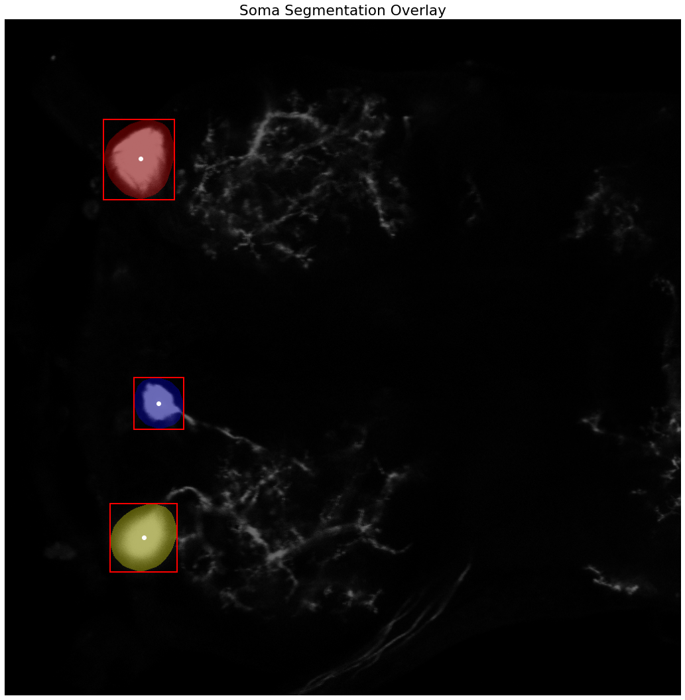
Example SWC lines describing each detected Soma
0 205.26891615541922 211.24335378323107 None CellType.SOMA 60.21523899876286 -1
1 232.43580192813323 581.1404469763365 None CellType.SOMA 40.053630846736695 -1
2 210.68926698221824 784.519636689267 None CellType.SOMA 54.4602166667495 -1
Now that we have masks that segment the soma, let's apply them to the image and see how close we got to containing the entirety of the cell bodies.
def plot_image(data, title):
plt.figure(figsize=(12,12))
io.imshow(data, cmap=plt.cm.binary)
plt.axis('off')
plt.title(title)
plt.show()
[indx, indy] = np.where(soma_mask == 1)
Color_Masked = neuron_unproc.copy()
Color_Masked[indx,indy] = 0
plot_image(neuron_unproc, "Original Image")
plot_image(Color_Masked, "Masked Image")
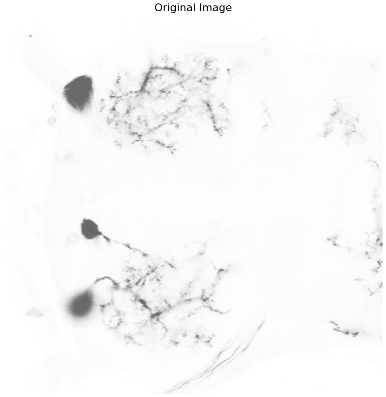
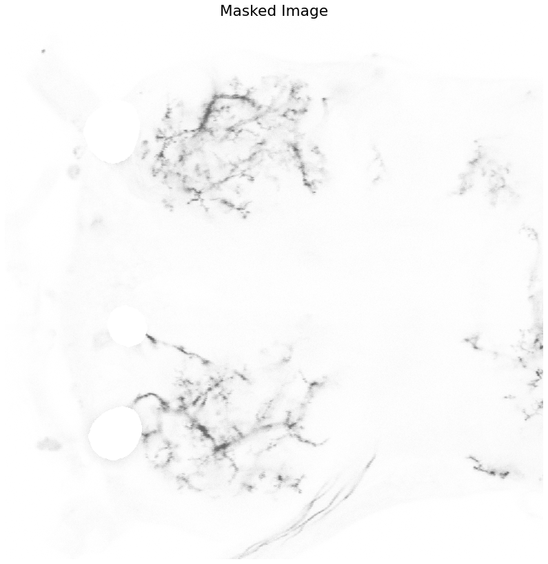
Seed Extraction
Now that we have a binary mask segmenting out the neuronal cell bodies, we can begin focusing our attention to the larger problem of tracing the thin branching dendrites. We will approach this problem by using a variety of ridge operators, which are designed to detect structures such as tubes, vessels, wrinkles and similar features.
Ridge Operators
There is a lot of underlying math explaining how these operators work. We could get into a discussion about how the eigenvalues of the Hessian matrix for the image is used to determine where intensity values in the image change perpendicular to the examined structure, but an in-depth analysis is not required at this time to actually use the filters.
Here we compare two different ridge operators to see which one is best suited for our image analysis task. We want to highlight regions in the image that are potential neurites/vessels. We will perform the operations on the original image, and then manually subtract out the pixels that are labeled as soma afterwards.
After the filter responses are obtained, we calculate the local maxima peaks and use them as control points for our tree reconstruction. There are a few approaches that are commonly used for reconstructing the branching tree structure of the dendrites.
Shortest Path Tracing
Shortest path tracing involves computing the optimal path between a set of given control points using Dijsktra's shortest path algorithm. This is computationally straightforward, and often used in many semi-automated approaches. However, one of the downsides to this approach is the necessity of computing the control points in the first place, which depending on the data may be difficult and ungeneralizable. It's use in semi-automated approaches allows the user to interactively define control points along the path of of the dendritic branches, and will often be utilized as part of a path-pruning algorithm.
Minimum Spanning Tree
This approach is conceptually similar to the shortest path tracing category of reconstructions. A set of landmark points must be automatically extracted from the image, or defined manually by the user. The main difference from the shortest path tracing approach is that the landmark points must be inferred into a weighted, connected graph, on which a minimum spanning tree is calculated. Due to the computational complexity of extracting the optimum minimum spanning tree being NP-complete, many implementations will often settle for approximating the MST by finding a k-minimum spanning tree for a subset of the landmark points. Several avenues for determinining how to connect the landmark points into a weighted connected graph have been proposed, including distances and intensity.
Path-pruning
This class of reconstruction algorithms involves overtracing the neuron and iteratively pruning back the trace. This is somewhat analogous to how the brain works in operation. At birth we have many times the amount of neuronal connections that we do in adulthood, that are eventually pruned back to form the optimal circuitry that carries us through life. By overtracing the neuron, using some sort of probabilistic tracer following the image gradient along a path of critical points, we can ensure that the resulting trace contains the majority of detail that can be lost using the shortest path or minimum spanning tree approaches. This is especially important for resolving smaller neuronal features in the dendrites, that are difficult to obtain using the aforementioned methods.
from skimage.exposure import rescale_intensity
from skimage.feature import peak_local_max
# apply the vesselness filters to the masked image
neurites_m = meijering(Color_Masked, black_ridges=False)
neurites_f = frangi(Color_Masked, black_ridges=False)
# normalize the intensity ranges to 8-bit values
rescale_m = rescale_intensity(neurites_m, out_range=(0,255)).astype(np.uint8)
rescale_f = rescale_intensity(neurites_f, out_range=(0,255)).astype(np.uint8)
print(f'meijering\tmin: {rescale_m.min()}\tmax: {rescale_m.max()}\tmean: {rescale_m.mean()}')
print(f'frangi \tmin: {rescale_f.min()}\tmax: {rescale_f.max()}\tmean: {rescale_f.mean()}')
fig, ax = plt.subplots(2,1,figsize=(20,20))
ax[0].set_axis_off()
ax[1].set_axis_off()
plt.tight_layout()
# plot the results of the tubularity filters
ax[0].imshow(rescale_m, cmap=plt.cm.afmhot)
ax[0].set_title('Meijering Filter', fontsize=20)
ax[1].imshow(rescale_f, cmap=plt.cm.afmhot)
ax[1].set_title('Frangi Filter', fontsize=20)
meijering min: 0 max: 255 mean: 5.620976448059082
frangi min: 0 max: 255 mean: 0.8442049026489258
Text(0.5, 1.0, 'Frangi Filter')
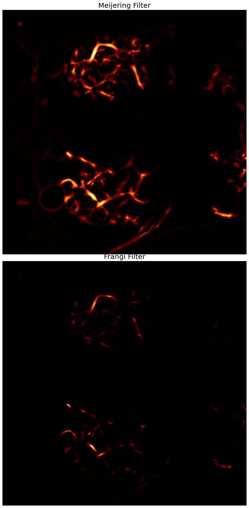
# extract the local maxima of the vesselness filter response
seeds_m = peak_local_max(rescale_m, min_distance=1, num_peaks=150)
seeds_f = peak_local_max(rescale_f, min_distance=1, num_peaks=150)
#seeds_m = peak_local_max(rescale_m, min_distance=40, num_peaks=120)
#seeds_f = peak_local_max(rescale_f, min_distance=40, num_peaks=120)
fig, ax = plt.subplots(2,1,figsize=(20,20))
ax[0].set_axis_off()
ax[1].set_axis_off()
plt.tight_layout()
ax[0].imshow(neuron_unproc, cmap=plt.cm.gray)
ax[0].set_title('Meijering Seeds', fontsize=20)
ax[0].plot(seeds_m[:, 1], seeds_m[:, 0], 'ro')
ax[1].imshow(neuron_unproc, cmap=plt.cm.gray)
ax[1].set_title('Frangi Seeds', fontsize=20)
ax[1].plot(seeds_f[:, 1], seeds_f[:, 0], 'ro')
#print(seeds_f)
[<matplotlib.lines.Line2D at 0x7f7e613b6310>]
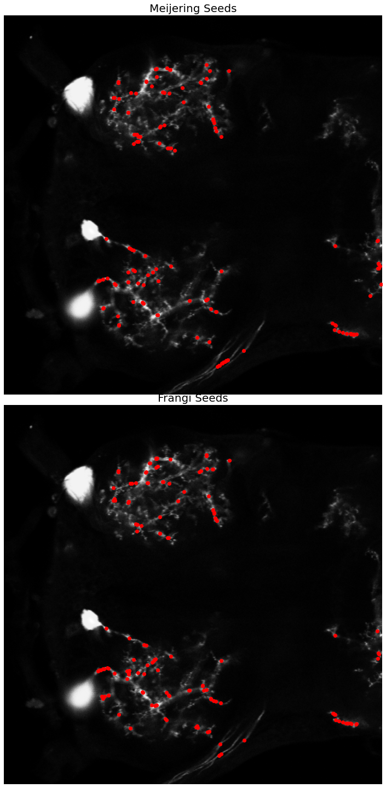
Skeletonization
The next step in the automated reconstruction pipeline is to extract a skeleton of the neuron. Several recent approaches attempt to extract the neuronal skeleton from the grayscale image directly, to avoid any issues involved with binarization and thresholding.
Topological skeletonization is the process of turning a volumetric figure into a single pixelwide representation. These skeletons maintain the geometric and topological properties of the shape being processed. Skeletons are extracted such that the resulting output is equidistant from the shape's boundaries.
Here we extract the medial_axis skeletonization from a preprocessed neuron image. This image is one that has had the segmented soma masked out, allowing the process to focus solely on the branching dendritic structures.
from skimage.morphology import skeletonize, medial_axis
from skimage.util import invert
img_thresh = threshold_otsu(neuron_unproc)
img = Color_Masked > img_thresh
#skeleton = skeletonize(img)
skel_noproc, dist_noproc = medial_axis(neuron_unproc, return_distance=True)
skeleton, distance = medial_axis(img, return_distance=True)
dist_on_skel = distance * skeleton
fig, axes = plt.subplots(nrows=2, ncols=1, figsize=(20, 20),
sharex=True, sharey=True)
ax = axes.ravel()
ax[0].imshow(skel_noproc, cmap=plt.cm.magma)
ax[0].contour(img, [0.5], colors='w')
ax[0].set_title('Unprocessed Skeleton', fontsize=20)
ax[1].imshow(skeleton, cmap=plt.cm.magma)
ax[1].contour(img, [0.5], colors='w')
ax[1].axis('off')
ax[1].set_title('Dendritic Skeleton', fontsize=20)
fig.tight_layout()
plt.show()
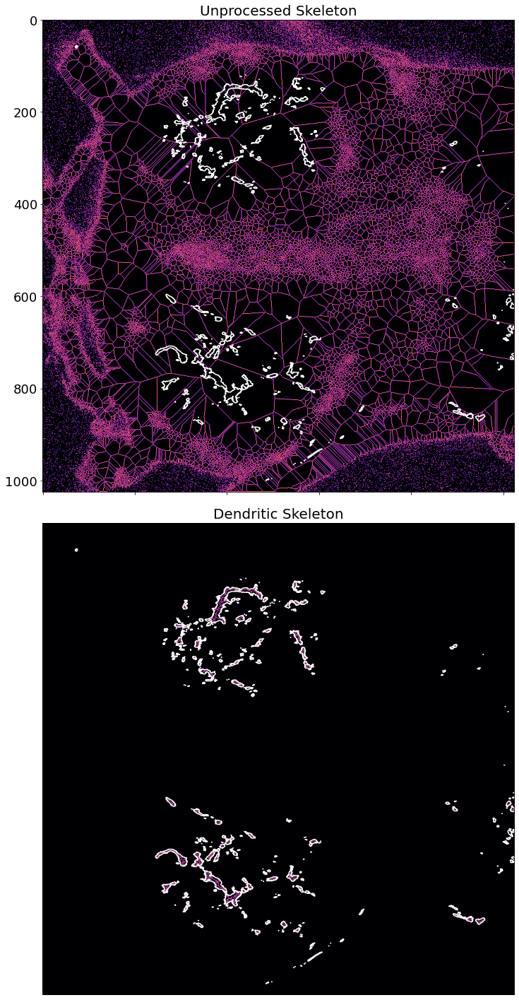
Gradient
When extracting seed points by calculating local peak maximum responses to the ridge operator, we can get additional information by calculating the local gradient. This local gradient calculation will give us directional information at the points, which can be used by an intelligent reconstruction algorithm to guide a tracer object. This tracer object can be used to overtrace the neuron, such as in the All-Paths Pruning algorithm, which creates multiple probabilistic traces of the neuron based on the landmark points and the gradient. These multiple overlapping traces are then iteratively pruned back by examining which voxels/pixels have been overtraced, and selectively removing them from the final result.
Unfortunately, due to time constraints I was unable to pursue this avenue of approach. I believe that this methodology would produce the best, and most accurate traces of the neurons, at the expense of computational time. Relevant research that employs the use of the image gradient for guiding probabilistic tracers are numerous, and produce state-of-the-art results.
# let's try to visualize the gradient now, to see if we can extract local branch direction
from skimage.feature import hog
from skimage import data, exposure
img = neuron_unproc
fd, hog_image = hog(img, orientations=8, pixels_per_cell=(8, 8), cells_per_block=(3, 3), feature_vector=True, visualize=True)
fig, (ax1, ax2) = plt.subplots(2, 1, figsize=(30, 30), sharex=True, sharey=True)
ax1.axis('off')
ax1.imshow(img, cmap=plt.cm.gray)
ax1.set_title('Input image')
# Rescale histogram for better display
hog_image_rescaled = exposure.rescale_intensity(hog_image, in_range=(0, 10))
ax2.axis('off')
ax2.imshow(hog_image_rescaled, cmap=plt.cm.afmhot)
ax2.set_title('Histogram of Oriented Gradients')
plt.show()
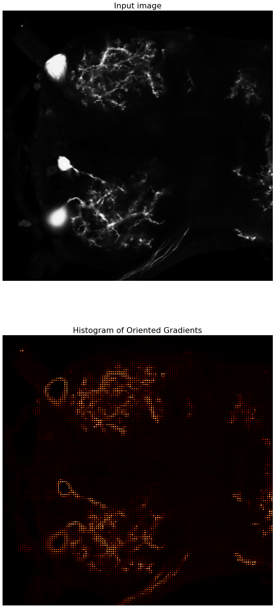
import mistree as mist
# no more ragged array warning
np.warnings.filterwarnings('ignore', category=np.VisibleDeprecationWarning)
# add the centroids to the list of seeds
seeds_m = np.concatenate((seeds_m,
np.array([[int(region.centroid[0]),int(region.centroid[1])]
for region in regionprops(label_image)])))
seeds_f = np.concatenate((seeds_f,
np.array([[int(region.centroid[0]),int(region.centroid[1])]
for region in regionprops(label_image)])))
# extract the x and y coordinates into their own variables for legibility
xs_m = seeds_m[:,1]
ys_m = seeds_m[:,0]
xs_f = seeds_f[:,1]
ys_f = seeds_f[:,0]
# construct MST from landmark points
mst_m = mist.GetMST(x=xs_m, y=ys_m)
mst_f = mist.GetMST(x=xs_f, y=ys_f)
# lets play around with the k-nearest neighbors
mst_m.define_k_neighbours(10)
mst_f.define_k_neighbours(10)
# extract MST edge and branch information
degree_m, length_m, branch_m, shape_m, l_index_m, b_index_m = mst_m.get_stats(include_index=True)
degree_f, length_f, branch_f, shape_f, l_index_f, b_index_f = mst_f.get_stats(include_index=True)
#print(length_m)
fig, axes = plt.subplots(nrows=3, ncols=1, figsize=(30, 30),
sharex=True, sharey=True)
ax = axes.ravel()
#ax[0].imshow(neuron_unproc, cmap=plt.cm.binary)
ax[0].imshow(label_image_overlay)
ax[0].axis('off')
ax[0].set_title('Meijering Seeds MST', fontsize=20)
#ax[1].imshow(neuron_unproc, cmap=plt.cm.binary)
ax[1].imshow(label_image_overlay)
ax[1].axis('off')
ax[1].set_title('Frangi Seeds MST', fontsize=20)
# plot the MST vertices (i.e seed/landmark points)
ax[0].plot(seeds_m[:, 1], seeds_m[:, 0], 'ro')
ax[1].plot(seeds_f[:, 1], seeds_f[:, 0], 'ro')
# plot the MST edges
ax[0].plot([xs_m[l_index_m[0]], xs_m[l_index_m[1]]],
[ys_m[l_index_m[0]], ys_m[l_index_m[1]]],
color='w')
ax[1].plot([xs_f[l_index_f[0]], xs_f[l_index_f[1]]],
[ys_f[l_index_f[0]], ys_f[l_index_f[1]]],
color='w')
ax[2].imshow(neuron_unproc, cmap=plt.cm.gray)
ax[2].axis('off')
ax[2].set_title('Original Image', fontsize=20)
fig.tight_layout()
plt.show()
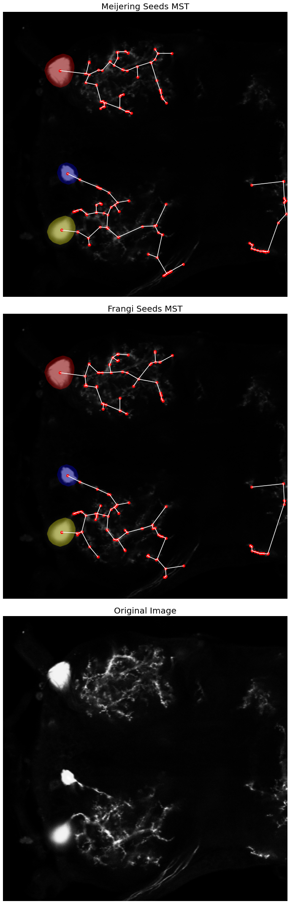